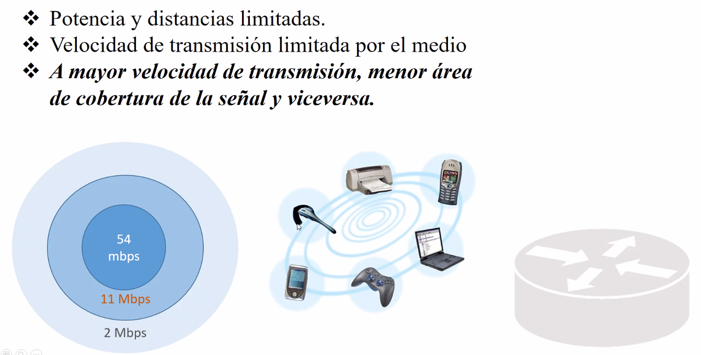

La velocidad baja a medida que te alejas del punto de acceso.


Para el analisis de redes inalabricas se usan los patrones de radiacion.
Verde: Bien
Amarillo: Ya valio

No aferctan.
El arbol puede ser mas obstructivo que un elemento de tablaroca.
Las hojas tienen agua y esto abosrbe la energia.